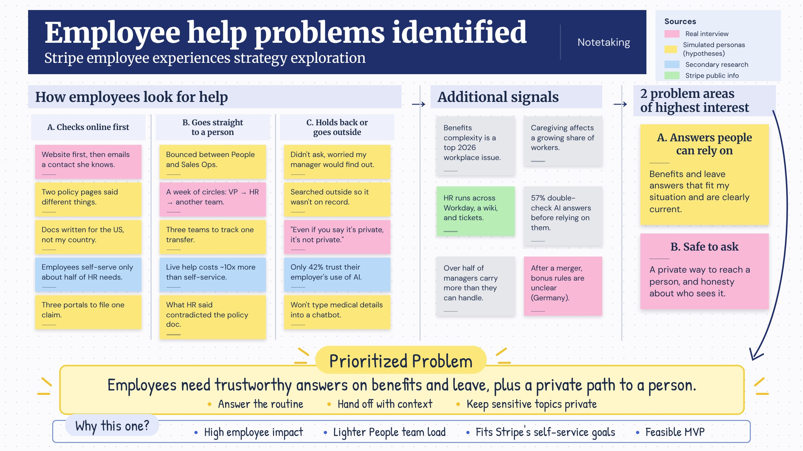

I put this together to practice thinking about Stripe's People products the way I would on the Employee Experiences team. I used public research, Stripe's public job postings, two real interviews, and simulated personas, which I label clearly as hypotheses.
My understanding of Stripe's Employee Experiences team
This team builds internal products for Stripe's own employees, managers, and People professionals. The goal is to make routine questions and tasks self-service, while making sure anything that needs judgment or care reaches the right person with the right context.
Based on Stripe's public job postings, People information lives across a few separate places: Workday for employee records, an internal wiki for policies, and a ticketing system for HR questions. This case study focuses on the moment an employee has a benefits or leave question and has to figure out where to go.
01Why I started here
I started my career in technical recruiting at Google and Codecademy, so I've been on the People side of these questions. Later I built Buddy at The Dev Difference, an AI interviewer where trust and human decisions were central to the product. This role sits right where those two experiences meet.
The constraint I kept in mind is trust, not speed. Security, legal, and Employee Relations rightly move carefully with employee data, so anything I proposed had to earn trust first and scale second.
02Research signals
I pulled from SHRM, Gartner, Korn Ferry, and several workplace surveys. I interviewed two employees, a claims specialist at a healthcare billing company in Chicago and a marketing operations manager at an IT company in Germany, and I wrote 11 simulated employee personas to form hypotheses. I put each signal on a sticky note, color-coded by source, and sorted until patterns showed up.

The clearest pattern was how people look for help:
- Checks online first: looks it up, and only contacts a person if that fails. They need answers they can trust are current.
- Goes straight to a person: emails or files a ticket right away. They need to reach the right person without being bounced between teams.
- Holds back or goes outside: avoids asking HR because they're worried who will find out. They need a private way to ask.
The secondary research backed this up. Employees resolve only about half of their HR needs on their own, and only 42% trust their employer to use AI in a way that benefits them.
My two real interviews pointed in different directions. The claims specialist found HR on the company website and got what she needed. The marketing operations manager in Germany needed her salary and bonus explained after a merger, and spent about a week going from her VP to HR to another team. On anything sensitive, she was blunt:
“Even if you say it’s private, it’s not private.”
Her magic wand was more transparency about how things work inside the company. Because my real sample is small, I treat the simulated findings as directional until I can test them with more people.
03Narrowing the problem: a framework
I scored five candidate problems on three lenses: employee trust, People team workload, and fit with Stripe's goals. Trust gets the most weight, because if employees don't trust the answers, nothing else matters. Every candidate also had to pass a risk check: a reversible pilot, measurable within a quarter, and backed by more than one source.

The rejected options mattered as much as the winner. A general HR chatbot was too broad to test well, and AI-drafted performance reviews would save time but hurt trust.
That led me to one problem: Employees need trustworthy answers to benefits and leave questions, and a private way to reach a person when the topic is sensitive.
04What I got wrong at first
I assumed privacy only mattered for the most serious cases, like reporting harassment. The research suggested it's much broader. People held back on asking about an internal move, a pregnancy they hadn't announced, or medical leave, because they didn't know who would see the question.
My interview in Germany added a second lesson: some people don't distrust the AI, they distrust HR itself. So I stopped treating privacy as an edge case and started treating it as a reason people never ask at all. That changed the product from "a better answer engine" to "a place people feel safe asking."
05The direction I chose
I combined two ideas: a benefits and leave assistant for routine questions, and a private conversation request for anything sensitive.

The core product question is how much the AI should do on its own. I decided request by request, based on how sensitive it is and whether it can be undone:
For the private conversation request, the product should be honest about what happens next. Once HR knows about some issues, the company may be required to act, so it shouldn't promise more confidentiality than it can keep. Legal and Employee Relations would own that wording. For employees who distrust HR itself, the private path should also include an option outside the usual HR route, such as an anonymous channel.
Sources: SHRM Top 5 Workplace Issues for 2026 · Workday, AI at work survey · Applaud, 2026 State of HR Service · Gartner on manager workloads · Korn Ferry Workforce 2026 · Stripe public job postings